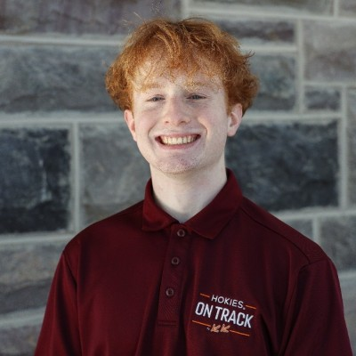
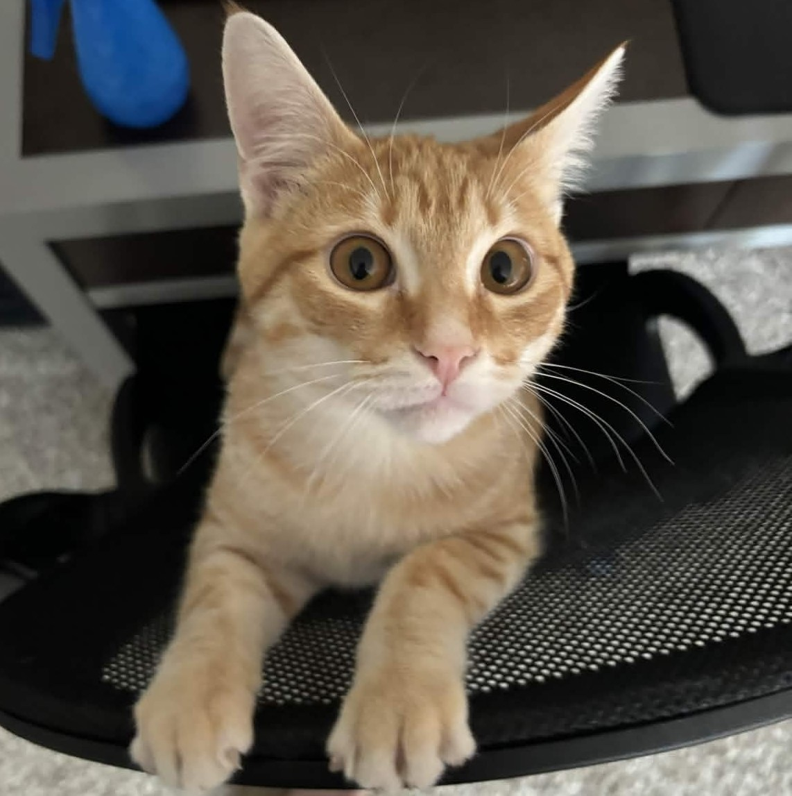
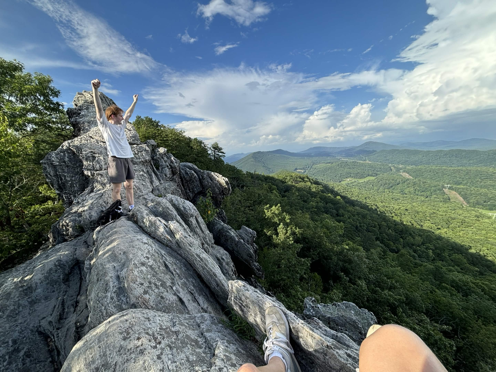
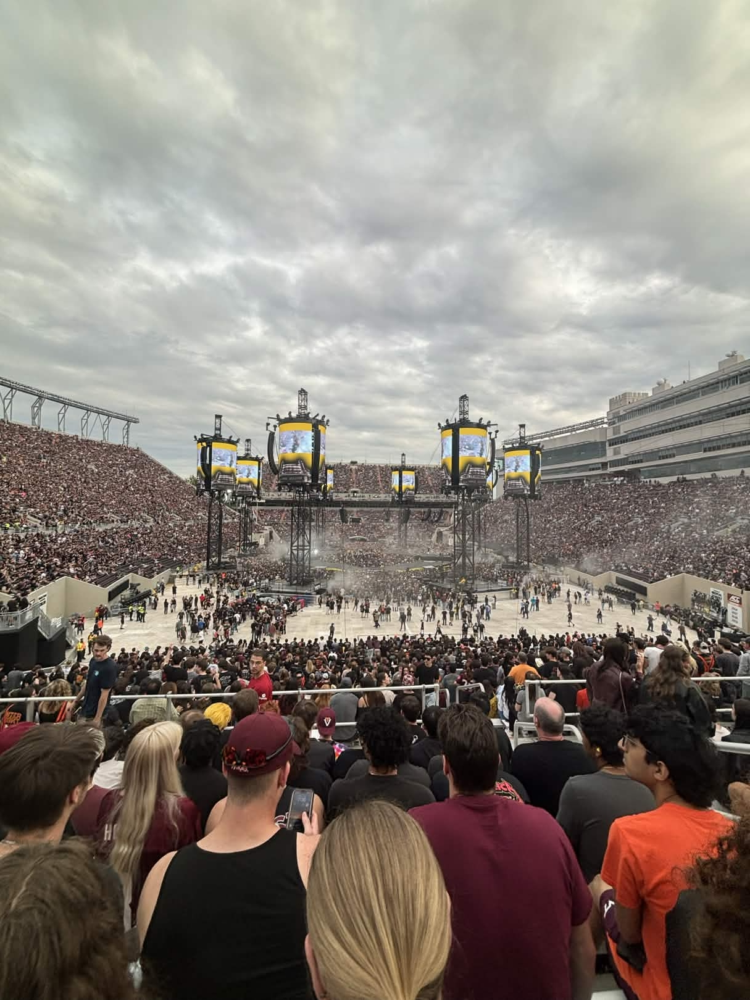
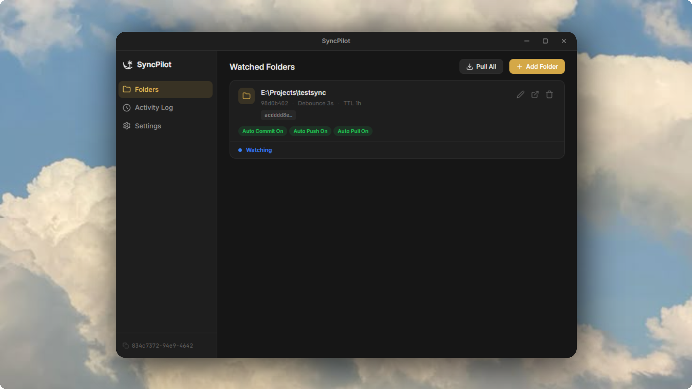

Hey! 👋
I'm Dillon,
a Computer Engineering student at Virginia Tech with a focus on FPGAs, digital design, and building things close to hardware.
About Me
Computer Engineer in the Making
I'm a junior at Virginia Tech pursuing a B.S. in Computer Engineering (GPA: 3.56 / 4.00), with coursework in FPGA-based digital design, embedded systems, and analog circuits. I enjoy projects that use both hardware and software and involve anything from writing in HDL languages to building GUIs in C++.
Currently, I'm looking for opportunities in FPGA design, embedded systems, or hardware-adjacent software roles where I can bring my skills into production. I thrive in fast-paced environments and enjoy both focused solo work and close team collaboration.
Top Skills
About
Who I Am

A goofy cat named Burg...

Top of "Dragon's Tooth" hike

Metallica at VT concert!!
As you may have read, I'm currently attending Virginia Tech, about to conclude my junior year in Computer Engineering. As I've progressed through my degree, I have shifted my focus more and more towards hardware, and how hardware interacts with the code its given.
Origins
I was born and raised in Columbus, NJ, and I was introduced to computers and video games at a very young age. But with older brothers who seemed to know everything about them, I couldn't resist the urge to learn more on my own. It started out as just figuring out how to put a PC together on my own, but my curiousity led to thinking about how all those parts even made something user-functional.
Coming to Virginia Tech, I was really only interested in learning more about how computer parts worked together, but my degree program opened so many doors to me about things I didn't even know existed. The circuitry fundamentals and theories, the physical properties of transistors, digital logic, and more significantly, FPGAs and embedded programming.
FPGAs and embedded systems really drew me into my studies, as there was something so satisfying about creating code that made an entire machine work. Not only that, but it was (mostly) completely customizable to me, meaning I could make small tweaks and optimize my design to fit certain criteria.
Extras
Outside of my studies, I worked closely with my university's New Students and Family Programs department to propose, plan, and execute orientation and welcoming events for new/incoming Virginia Tech students. Being able to attend this university has been a blessing, and I want every student that's coming here to feel at home and to realize what a wonderful place it is.
With that being said, I've always wanted to help new students in their most-likely-extremely-nerve-racking transition to college as I was once in their shoes, not too long ago. The people I've met and the things I've done have changed my life, and I want these new students to feel at ease throughout an incredibly uncertain point of their career.
I'm also a Co-Director for a student organization, First-Year Leadership Experience (FLEX), where I'm sure you can see why I choose to devote my time here. So far, I've mentored multiple new students and have created opportunities for them to be leaders not only on campus, but in the greater New River Valley area. Next year, we're going through a large transformation, but I'm super excited to lead the program to new horizons.
Personal
I also have a cat, named Burg (after Blacksburg, VA) who is such a typical orange cat. I've fostered many, many cats in my life, but this cat is always doing things I've never seen a cat do, so he's my bundle of joy and my source of enthusiam and entertainment from time to time.
I love spending time playing sports with friends, going on hikes in the Appalachian Mountains, and just brainstorming new things or ways to do things. One of my most anticipated things I look forward to every semester is the opportunity to play intramural sports with my friends, as it lets me stay connected with those I hardly get to hang out with as our careers and programs diverge.
Another thing I often find myself doing is constantly doing mini research dives into the most random topics you could think of. For some reason, I commonly get sucked into the rabbit hole of cryptography algorithms, Action Park (the defunct amusement park), and seeing how old video game code (think 2011 Minecraft) functioned, to name a few examples.
This really goes along with my belief that learning should be occuring at practically all times, and is the most important thing in life. This has prompted me to take courses in areas such as psychology and management, not only because I want to learn more, but because each subject has such useful substance that effectively shapes our perspectives and the way we think.
Future
I look forward to learning more about my field, whether it be software programming, network infrastructure, FPGA or hardware design, anything. I hope to build a skill-set of so much knowledge that will make me proficient in any system, but hopefully be one of the best FPGA, ASIC, or embedded systems programmers out there. Pursuing fields like this seem to have no limits to me, given that YOU can make functions/products better by directly working with hardware elements.
If you would like to get in touch with me, find me on LinkedIn or email. I would love to chat with founders, builders, or other students to learn more about their career and what they are currently working on.
Projects
Things I've Built
Click any project to read more about it.
- Developing a playable 'Typeracer' demo application through only the FPGA chip on the DE1-SoC board.
- Utilizing the PS2 interface to communicate with a keyboard to read data in to the system and process events.
- Creating graphics through a VGA interface, using sprites and ROM while constructing the full application under a tight memory constraint.

Early, in-progres UI design for the application.
Overview
My current project — I'm building a cross-platform file sync desktop app using Electron and Node.js, featuring real-time file watching (chokidar), SHA-256 change detection, and a Supabase relay backend. When users save a file locally, chokidar populates a local SQLite table, which uses API calls to Supabase to check if this change or file is currently cached in storage. If it's new, the file is pushed to Supabase, where it gets deleted automatically once all subscriber devices download/pull the file from storage. Each file has a TTL to ensure storage does not reach capacity and to reduce the vulnerability of having files saved online. Subscriber devices poll the database on a debounced timer and look for table entries that contain their UUID, along with a folder ID to distinguish which folder the file will go to locally.
Motivation
As a student with multiple devices for different purposes, I found it very frustrating to forget to upload my files to a service like Google Drive or Dropbox and not be able to access them when I needed them. I also found products like OneDrive annoying to deal with, limited in capability, and flawed in that crucial way of keeping files in the cloud rather than locally. So I decided to make something better — something designed around my own problems. But I've been realizing more and more that my friends and peers share the same frustrations. This has pushed me to make the application as polished and resourceful as possible before distributing, with the goal of having a final product that others can use as a primary alternative to existing tools.
- Supporting natural language processing — a core component of LLMs — by decomposing files to tokenize words and syllables, enabling reading-level analysis and simple next-word prediction.
- Implementing lexical processing, parts-of-speech identification, and word/phrase embedding to support downstream machine learning workflows.
- Building a user-friendly Qt GUI designed for users of all technical backgrounds, emphasizing clear feedback and ease of use.
- Modeled a digital system using time-dependent counter submodules implemented as clock dividers in series to accurately track elapsed time while the stopwatch was enabled.
- Built a Moore FSM to orchestrate counter submodules — controlling when they run, halt, and display lap/split times to a seven-segment HEX display on a DE1-SoC FPGA board, without interrupting the live stopwatch count.
- Documented extensive verification techniques alongside thorough design decisions and implementation notes.
- Worked with Virginia Tech IT professionals to create a user-tailored scheduling program to determine the orientation events new students MUST attend.
- Created a database of input/output combinations to cover all new student scheduling options (move-in date, student identity, etc) using MATLAB functions to automate the process.
Abstract
This project was brought to life due to many complications between new students, families, and VT department staff and faculty. The orientation and move-in season is very hectic, and there was no good way of tracking where students had to be, and when, especially if they had more special circumstances then a general VT student moving in on a normal given day. As a result, during my time throughout my summer internship at New Student and Family Programs, I worked closely with VT IT professionals to provide all parties with a guide to answer many of their questions. Through identifying all student identities (student athlete, international student, etc.) and collaborating with their respective designated VT department, I was able to sum up all scheduling possibilities, constraints, and special conditions that students would have. Using all given inputs, I used MATLAB logic to automate the process to generate outputs based on boolean functions.
Results
The result was an accessible software tool for new students, families, and VT faculty and staff to use throughout the 2025 move-in season where it received thousands of uses, solved student confusion, and significantly limited the number of questions VT staff received regarding a student's orientation schedule.

LTspice schematic for the entire receiver circuit, with accurate component values to reflect tolerance.
- Constructed an IR-based transmitter and wireless receiver that communicate over 3 feet, transmitting ASCII strings at a Baud rate of 45.45 with 2295 Hz (mark) and 2125 Hz (space).
- Developed embedded Arduino code to generate signals at target frequencies, and designed RC circuits to amplify voltage and filter noise.
- Validated end-to-end system performance using oscilloscopes and Digilent WaveForms to confirm signal fidelity.
Coursework
What I've Studied
Relevant courses I've taken at Virginia Tech, grouped by area of focus.
Digital Hardware & Design
Digital Design I · Digital Design II · · Computer Organization & Architecture
- RTL design with Verilog/SystemVerilog: combinational logic, sequential circuits, FSMs, pipelined datapaths, and control systems for timing.
- FPGA implementation and simulation using Quartus and Questa; hands-on lab work with DE1-SoC boards.
- Assertion-based testbenches, VGA and graphics hardware & methods, and hardware/circuit testing.
- Utilization of ADC, SPI, PS2, VGA, and other interfaces provided through the DE1-SoC board to accomplish larger functionality.
- Computer architecture fundamentals: MIPS architecture, memory hierarchy, caching, and processor microarchitecture.
Embedded Systems & Software
Applied Software Design · Embedded Systems · Data Structures & Algorithms · Computational Engineering
- Project design with the use of polymorphism, inheritance. Programming techniques using API specifications, containers, generics, libraries, widgets, models, and views. Software frameworks for embedded systems; and advanced techniques with multi-threading to reflective programming.
- Custom thread-safe data structures and algorithms, as well as thread and graphics implementation practice through external frameworks such as Qt.
- Programming on real-time operating systems using interrupt-driven I/O, memory-mapped peripherals, and HAL-based driver development on embedded boards.
- Algorithm design and complexity analysis across stacks, queues, trees, graphs, and hash tables.
- Applications of UART, I2C, and SPI protocols, ADCs, DACs, and GPIO in embedded programs.
Circuitry & Electronics
Circuits & Devices · Signals & Systems · Physical Electronics
- Circuit analysis techniques including node/mesh methods, Thevenin/Norton equivalents, and AC steady-state analysis.
- Transient response analysis, transfer functions, Bode plots, operating points and small-signal responses.
- Signal processing fundamentals: Fourier transforms, Laplace transforms, convolution, and filter design.
- Design for oscillators, filters, and amplifiers using processes in professional practices.
- Semiconductor device physics and amplifier design using BJTs and MOSFETs; op-amp circuit analysis.
Computer Networking
Introduction to Computer Networking
- Fundamentals on Internet architecture and layering, application layer protocols, transport layer protocol.
- Congestion control algorithms, routing algorithms and protocols, Internet address, etc.
- Project experience with Wireshark, Python sockets, TCP, UDP, IP, and network command-line utilities.